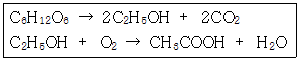

식품기사 (2011-03-20 기출문제)
1과목: 식품위생학
1. 일반적으로 식물체의 표면에서 광선이나 자외선에 의해 분해되기 쉽고, 물체 내에서도 효소적으로 분해되며 비교적 잔류기간이 짧은 유기농약은?
- 유기염소제
- 유기수은제
- 유기인제
- 유기비소제
(정답률: 81%)

2. 곰팡이독 중독증(mycotoxicosis)의 특징을 올바르게 설명한 것은?
- 단백질이 풍부한 축산물을 섭취하면 일어날 수 있다.
- 원인식품에서 곰팡이의 오염증거 또는 흔적이 인정된다.
- 항생물질이나 약제요법을 실시하면 치료의 효과가 있다.
- 감염형이기 때문에 사람과 사람 사이에서 직접 전염된다.
(정답률: 85%)
3. 도자기, 법랑기구 등에서 식품으로 이행이 예상되는 물질은?
- 납
- 주석
- 가소제
- 안정제
(정답률: 83%)
4. DL-멘톨은 식품첨가물 중 어떤 종류에 해당되는가?
- 보존료
- 착색료
- 감미료
- 착향료
(정답률: 80%)
5. 단백뇨를 증상으로 하는 금속중독은?
- 납 중독
- 망간 중독
- 수은 중독
- 카드뮴 중독
(정답률: 65%)
6. 돼지를 중간숙주로 하며 인체유구낭충증을 유발하는 기생충은?
- 간디스토마
- 긴촌충
- 민촌충
- 갈고리촌충
(정답률: 85%)
7. 대장균군에 대한 최학수법의 설명으로 틀린 것은?
- 최확수란 이론적으로 가장 가능한 수치를 말한다.
- 대장균군수는 희석한 시료를 유당배지 발효관에 접종하여 실험한다.
- 유당배지 발효관 중 가스생성 여부에 따라 확률적인 대장균의 수치 를 산출하고 최확수로 나타낸다.
- 실험결과, 최확수표에서 직접 구하는 대장균군수는 시료 1ml에 대한 것이다.
(정답률: 81%)
8. 식품등의 표시기준으로 틀린 것은?
- 유통기한 : 제품의 제조일로부터 소비자에게 판매가 허용되는 기한
- 트랜스지방 : 트랜스구조를 1개 이상 가지고 있는 비공액형의 모든 포화지방산
- 품질유지기한 : 식품의 특성에 맞는 적절한 보존방법이나 기준에 따라 보관할 경우 해당식품 고유의 품질이 유지될 수 있는 기한
- 당류 : 식품내에 존재하는 모든 단당류와 이당류의 합
(정답률: 71%)
9. 식품 내에서 곰팡이의 발생 조건에 해당하지 않는 것은?
- 세균의 발육이 어려운 곳에서도 발생한다.
- 고농도의 당을 함유하는 식품에서도 발생한다.
- 항생제를 첨가한 식품에서도 잘 발육한다.
- 우유가 변패되는 경우 세균보다 곰팡이가 먼저 발생한다.
(정답률: 81%)
10. HACCP의 중요관리점에서 모니터링의 측정치가 허용단계치를 이탈한 것이 판명될 경우, 영향을 받은 제품을 배제하고, 중요관리점에서 관리 상태를 신속 정확히 정상으로 원위치 시키기 위해 행해지는 과정은?
- 기록유지(Record keeping)
- 예방조치(Preventive action)
- 개선조치(Corrective action)
- 검증(Verification)
(정답률: 88%)
11. 비교적 소량의 검체를 장기간 계속 투여하여 그 영향을 검사하는 시험으로, 식품첨가물의 독성을 평가하는데 사용되는 것은?
- 급성독성시험
- 아급성독성시험
- 만성독성시험
- 최기형성시험
(정답률: 88%)
12. 발진티푸스의 균명은?
- Bacillus anthracis
- Salmonella paratyphi
- Rickettsia prowazeki
- Mycobacterium tuberculosis
(정답률: 61%)
13. 인축공통감염병과 병원체의 연결이 틀린 것은?
- Q열 - Coxiella burnetii
- 파상열 - Brucella abortus
- 탄저 - Bacillus cereus
- 야토병 - Pasteurella tularensis
(정답률: 72%)
14. Polyvinyl chloride(PVC)에서 위생상 문제가 되는 것은?
- 단량체(monomer)
- 2량체(dimer)
- 3량체(trimer)
- 다량체(polymer)
(정답률: 64%)
15. 식품의 살충, 살균 등의 목적으로 사용되는 방사선 중 조사기준이 되는 것은?
- 가시광선
- α선
- β선
- γ선
(정답률: 90%)
16. 미량으로 발암이나 만성중독을 유발시키는 화학물질 중 상수원 물의 오염이 문제가 되는 것은?
- 아질산염(N-nitrosamine)
- 메틸알코올(methyl alcohol)
- 트리할로메탄(trihalomethane, THM)
- 이환방향족아민류(heterocylic amines)
(정답률: 87%)
17. 자외선 살균에 대한 설명으로 가장 알맞은 것은?
- 살균작용은 250~260nm가 가장 약하다.
- 균종에 따른 저항력이 차이가 없다.
- 가장 유효한 살균대상은 공기와 물이다.
- 조사 후 잔류효과가 있다.
(정답률: 71%)
18. 식품 검체로부터 미생물을 신속하게 검출하는 방법에 해당하는 것은?
- PCR을 이용하는 방법
- TLC를 이용하는 방법
- HPLC를 이용하는 방법
- IR을 이용하는 방법
(정답률: 81%)
19. 식품공전상 탄산 음료수의 기준, 규격에서 용기의 주석 제한량은? (단, 캔 제품에 한한다.)
- 100 mg/kg 이하
- 150 mg/kg 이하
- 200 mg/kg 이하
- 300 mg/kg 이하
(정답률: 70%)
20. 미생물의 증식에 의해 발생하는 식품의 부패나 변질을 방지하기 위해 사용되는 물질은?
- 산화방지제
- 보존료
- 살균제
- 표백제
(정답률: 89%)
2과목: 식품화학
21. 식품을 씹는 동안에 식품성분의 여러 인자들이 감각을 다르게 하여 식품전체의 조직감을 짐작하게 한다. 이런 조직감에 영향을 미치는 인자가 아닌 것은?
- 식품입자의 모양
- 식품입자의 크기
- 표면의 조잡성(roughness)
- 표면장력
(정답률: 84%)
22. 유지의 중성지질에 붙어 있는 지방산을 가스크로마토그래피(GC)를 활용하여 분석할 때 유지의 처리 방법은?
- 중성지질을 헥산 용매에 희석한 후 바로 주사기를 이용하여 GC에 주입한다.
- 중성지질을 비누화하여 유리지방산을 제거한 후 GC에 주입한다.
- 중성지질에 직접 에틸기를 붙여 GC에 주입한다.
- 중성지질을 지방산메틸에스터로 유도체화시킨 후 GC에 주입한다.
(정답률: 75%)
23. 다음 중 단백질의 아미노산 구성원소로 가장 적당한 것은?
- C, H, O, S, P
- C, H, O, N, P
- C, H, O, N, K
- C, H, O, N, S
(정답률: 75%)
24. 아미노-카르보닐 반응에 의해 생성된 화합물로 고소하고 탄 냄새의 특성을 띠며, 커피나 볶은 참기름 등에 많이 함유되어 있는 화합물은?
- propyl mercaptan
- methionol
- pyrazine
- trimethylamine
(정답률: 59%)
25. 다음 중 열변성(heat denaturation)이 일어날 때 수용성이 증가되는 대표적인 단백질은?
- 알부민
- 글로불린
- 글루텐
- 콜라겐
(정답률: 66%)
26. 전분의 호화에 대한 일반적인 설명 중 잘못된 것은?
- 생전분에 물을 넣고 가열하였을 때 소화되기 쉬운 α전분으로 되는 현상이다.
- 호화에 필요한 최저온도는 일반적으로 60℃ 전후이다.
- 호화된 전분의 X선 회절도는 불명료한 형태로 바뀐다.
- 호화가 일어나기 쉬운 수분함량은 30~60%이다.
(정답률: 58%)
27. 식품의 산성 및 알칼리성에 대한 설명 중 틀린 것은?
- 알칼리생성원소와 산생성원소 중 어느 쪽의 성질이 큰가에 따라 알칼리성식품과 산성식품으로 나뉜다.
- 식품이 체내에서 소화 및 흡수되어 Na, K, Ca, Mg 등의 원소가 P, S, Cl, I 등의 원소보다 많은 경우를 생리적 산성식품이라 한다.
- 산성식품을 너무 지나치게 섭취하면 혈액은 산성 쪽으로 기울어 버린다.
- 대표적인 생리적 알칼리성 식품은 과실류, 해조류 및 감자류이다.
(정답률: 74%)
28. 자외선을 받으면 생리활성을 갖게되는 물질로서 비타민 D의 전구물질은 어느 것인가?
- β-싸이토스테롤(β-sitosterol)
- 7-디히드로 콜레스테롤(7-dehydrocholesterol)
- 스티그마스테롤(stihmasterol)
- 크립토잔틴(cryptoxanthin)
(정답률: 59%)
29. 다음 펙틴질(pectic substance) 중 methyl esterrl가 가장 적은 것은?
- Protopectin
- Pectin
- Pectic acid
- Pectinic acid
(정답률: 49%)
30. 소비자의 선호도를 평가하는 방법으로서 새로운 제품의 개발과 개선을 위해 주로 이용되는 관능 검사법은?
- 묘사 분석
- 특성차이 검사
- 기호도 검사
- 차이식별 검사
(정답률: 90%)
31. 오이 김치를 담근 후 오이의 녹색이 점차 갈색으로 변화되는 이유로 적당한 것은?
- 녹색 색소인 클로로필 분자의 Mg이 K+로 치환 되었기 때문
- 녹색 색소인 클로로필 분자의 Mg이 Na+로 치환 되었기 때문
- 녹색 색소인 클로로필 분자의 Mg이 Cu++로 치환 되었기 때문
- 녹색 색소인 클로로필 분자의 Mg이 H+로 치환 되었기 때문
(정답률: 59%)
32. 호화전분의 물리적 성질이 아닌 것은?
- 부피의 팽윤
- 색소 흡수 능력의 감소
- 용해성의 증가
- thixotropic gel의 성질을 나타낸다.
(정답률: 72%)
33. 한번 사용한 기름을 새로운 기름에 섞으면 산패가 촉진된다. 이 현상은 다음 중 어떤 성질과 가장 관계 깊은가?
- 유화(emulsion)
- 자동산화(autoxidation)
- 검화(saponification)
- 경화(hydrogenation)
(정답률: 78%)
34. 버터나 생크림을 수저로 떠서 접시에 올려놓았을 때 모양을 그대로 유지하는 물리적 성질은 다음 중 어느 것인가?
- 점성
- 탄성
- 소성
- 점탄성
(정답률: 77%)
35. 지방질의 불포화도를 나타내 주는 것은?
- 비누화 값(saponification value)
- 요오드가(iodine value)
- 산가(acid value)
- 폴렌스케 값(polenske value)
(정답률: 77%)
36. 탄수화물의 일반적인 물리ㆍ화학적 특성으로 틀리는 것은?
- 단백질과 함께 가열하면 갈변화를 일으킨다.
- 아밀라아제에 의하여 가수분해될 수 있다.
- 탄소, 수소, 산소, 질소 등으로 구성되어져 있다.
- 수분과 함께 가열 시 수화와 팽윤 과정을 거쳐 젤화가 된다.
(정답률: 69%)
37. 겨자의 매운 맛을 나타내는 성분은?
- 피페린(piperine)
- 차비신(chavicine)
- 진제론(zingerone)
- 이소티오시아네이트(isothiocyanate)
(정답률: 67%)
38. 단백질이 변성되면 나타나는 일반적인 특성 변화에 대한 내용으로 옳은 것은?
- 소화 분해력 감소
- 친수성 증가
- 용해도의 감소
- 반응성 감소
(정답률: 57%)
39. 고기 근육 단백질의 주성분은?
- 미오신(myosin)
- 헤모글로빈(hemoglobin)
- 콜라겐(collagen)
- 마이오글로빈(myoglobin)
(정답률: 70%)
40. 쌀을 도정함에 따라 그 비율이 높아지는 성분은?
- 오리제닌(oryzenin)
- 전분
- 티아닌(thiamin)
- 칼슘
(정답률: 84%)
3과목: 식품가공학
41. 설탕 20kg을 물 80kg에 녹였다. 이 설탕용액에서 설탕의 몰분율은?
- 0.0923
- 0.634
- 0.⑤84
- 0.0130
(정답률: 44%)
42. 육류 가공 시 보수성에 영향을 미치는 요인과 가장 거리가 먼 것은?
- pH
- 유리아미노산의 양
- 이온의 영향
- 근섬유간 결합상태
(정답률: 64%)
43. 탈기의 방법에 대한 설명으로 틀린 것은?
- 기계적 탈기는 점성식품을 채우고 탈기하는 경우에 가장 적합하다.
- 가스주입법은 불활성 가스를 head space에 주입하여 기존 공기를 제거하는 방법이다.
- 수증기주입법은 많은 공기가 혼입되어 있어 수증기의 자유로운 통과를 방해하는 식품에는 적당하지 않다.
- 가열탈기의 가열효과는 통조림 통내 식품에 갇힌 공기나 가스를 제거하여 상부 공간에 존재하는 공기를 수증기와 대체하는 것이다.
(정답률: 53%)
44. 분유 및 계란분을 제조하는데 가장 알맞은 건조기는?
- 분무 건조기(spray drier)
- 킬른 건조기(kiln drier)
- 터널 건조기(tunnel drier)
- 냉동 건조기(freeze drier)
(정답률: 86%)
45. 햄이나 베이컨을 만들 때 훈연(smoking)을 한다. 다음 중 훈연의 목적과 관계 없는 것은?
- 향기의 부여
- 제품의 색 향상
- 보존성 부여
- 조직의 연화
(정답률: 83%)
46. 추출법에 의한 제유 시 추출에 가장 많이 쓰는 용제는?
- 헵탄(heptane)
- 헥산(hexane)
- 벤젠(benzene)
- 에테르(ether)
(정답률: 69%)
47. 환경기체조절포장(MAP : modified atmosphere packaging)과 관련하여 가장 거리가 먼 것은?
- 포장재의 투습도가 가장 중요한 인자이다.
- CA 저장법의 일종이다.
- 포장재의 종류와 두께 그리고 온도에 의하여 식품의 변질 정도가 결정된다.
- 일반적인 대상 식품인 과일의 발생기체의 양과 종류에 의하여 변질 정도가 결정된다.
(정답률: 56%)
48. 토마토케첩 제조 시 갈변의 주원인은?
- 토마토의 적색 색소인 리코펜(lycopene)이 가열과정 중에 산화되었기 때문
- 토마토의 색소성분인 카로티노이드(carotenoid)가 알칼리 성분에 의해 착색화합물을 생성하였기 때문
- 토마토에 함유된 당이 가열되어 효소적 갈변이 진행되었기 때문
- 토마토에 함유된 유기산과 리코펜(lycopene)이 반응하여 착색물질을 생성하였기 때문
(정답률: 51%)
49. 밀감을 통조림으로 가공할 때 속껍질 제거 방법으로 적당한 것은?
- 산처리
- 알칼리처리
- 열탕처리
- 산, 알칼리 병용처리
(정답률: 82%)
50. 달걀의 기포성은 난백에 기인하며 여러 요인에 의해 영향을 받는다. 다음 중 난백의 기포성에 대한 설명 중 틀린 것은?
- 난백에 설탕이나 glycerol을 가하면 기포력의 증가를 꾀할 수 있다.
- 일반적인 작업온도 내에서는 온도가 높아질수록 기포력은 크다.
- ovalbumin의 등전점 부근인 pH 4.8에서 난백의 기포성이 최대로 된다.
- ovomucin을 제거하면 난백의 기포안정성은 감소하게 된다.
(정답률: 44%)
51. 감의 떫은맛을 없애는 처리의 원리로서 옳은 것은?
- shibuol(diosprin)을 용출 제거시킨다.
- shibuol(diosprin)을 불용성 물질로 변환시킨다.
- shibuol(diosprin)을 당분으로 전환시킨다.
- shibuol(diosprin)을 분해시킨다.
(정답률: 71%)
52. Whole egg powder 나 egg white powder를 건조하여 제조한 제품의 색깔, 점성 등 제품의 품질이 떨어져 있다. 이는 공정상의 어떤 문제가 주원인으로 작용하는가?
- 달걀 원료에 문제가 있다.
- 건조 시 너무 낮은 온도에서 건조를 진행하였기 때문이다.
- 제품 특성상 갈색화는 문제가 되지 않는다.
- 전처리공정인 제당처리 또는 산성화처리가 미진하였다.
(정답률: 77%)
53. 된장 숙성에 대한 설명으로 틀린 것은?
- 탄수화물은 아밀라아제의 당화작용으로 단맛이 생성된다.
- 당분은 효모의 알코올 발효로 알코올 등의 방향물질이 생성된다.
- 단백질은 프로테아제에 의하여 아미노산으로 분해되어 구수한 맛이 생성된다.
- 60~65℃에서 3~5시간 유지하여야 숙성이 잘된다.
(정답률: 79%)
54. 산분해간장용 원료로 주로 사용되는 것은?
- 감자
- 돼지감자
- 탈지대두
- 고구마
(정답률: 86%)
55. 진공농축장치 내의 압력을 U자관 마노미터로 측정하였더니 대기압에 비해 수은주 높이가 40cm 차이가 났다. 이때 농축장치 내의 절대압력은? (단, 수은의 밀도는 13600 kg/m3이다.)
- 40.0 kPa
- 61.3 kPa
- 53.3 kPa
- 48.0 kPa
(정답률: 30%)
56. 두부를 제조할 때 두유의 단백질 농도가 낮을 경우 나타나는 현상과 거리가 먼 것은?
- 두부의 색이 어두워진다.
- 두부가 딱딱해진다.
- 가열 변성이 빠르다.
- 응고제와의 반응이 빠르다.
(정답률: 53%)
57. 우유 단백질(카제인)의 등전점은?
- pH 7.6
- pH 6.6
- pH 5.6
- pH 4.6
(정답률: 74%)
58. 다음 중 시유제조공정의 순서가 맞는 것은?
- 여과 및 청정 → 균질 → 살균 → 표준화
- 균질 → 여과 및 청정 → 표준화 → 살균
- 살균 → 균질 → 표준화 → 여과 및 청정
- 여과 및 청정 → 표준화 → 균질 → 살균
(정답률: 40%)
59. 다음의 막분리공정 중 발효시킨 맥주의 효모를 제거하여 저장성을 부여함으로써 향미가 우수한 맥주의 생산에 이용되는 공정은 어느 것인가?
- 정밀여과
- 한외여과
- 전기투석
- 역삼투
(정답률: 51%)
60. 우유를 응고시켜 침전할 때 직접 관여하는 단백질은?
- αs-casein
- κ-casein
- β-lactoglobulin
- β-casein
(정답률: 74%)
4과목: 식품미생물학
61. 생육온도에 따른 미생물의 대별시 고온균(thermophile)의 최적 생육온도의 범위에 해당하는 것은?
- 30 ~ 40℃
- 50 ~ 60℃
- 70 ~ 80℃
- 90 ~ 100℃
(정답률: 62%)
62. 녹조류로서 균체단백질(SCP)로 이용되며 CO2를 이용하고 O2를 방출하는 것은?
- 효모(yeast)
- 지의류(lichens)
- 클로렐라(chlorella)
- 곰팡이(molds)
(정답률: 87%)
63. 다음 미생물 중 원핵생물에 속하는 것은?
- yeast
- bacteria
- protozoa
- algae
(정답률: 74%)
64. 식품공장의 파아지(phage) 대책으로 적합하지 않은 것은?
- 공장주변을 청결히 한다.
- 공장 내의 공기를 자주 바꾸어 준다.
- 2종 이상의 균주 조합 계열을 만들어 2~3일 마다 이 계열을 바꾸어 사용한다.
- 용기의 살균처리를 철저히 한다.
(정답률: 71%)
65. 복제상의 실수와 돌연변이 유발물질에 의한 염기변화를 수선(repair)하는 DNA 수선의 방법이 아닌 것은?
- excision repair
- recombination repair
- mismatch repair
- UV repair
(정답률: 73%)
66. 곰팡이와 그 용도가 적절히 짝지어진 것은?
- Eremothecium ashbyii - 리보플라빈 생산
- Monascus purpureus - 항생제 세팔로스포린 제조
- Mucor rouxii - 홍주 제조
- Aspergillus flavus - 곰팡이 코오지 제조
(정답률: 48%)
67. Acetobacter속이 주요 미생물로 작용하는 발효식품은?
- 고추장
- 청주
- 식초
- 김치
(정답률: 87%)
68. 전자전달계의 산화적인산화에 있어서 1분자의 NADH로부터 NAD가 관여하는 탈수소효소의 경우 몇 분자의 ATP가 생성되는가?
- 1분자
- 2분자
- 3분자
- 4분자
(정답률: 45%)
69. 전분(starch)의 비환원성 말단에서 포도당 단위로 끊어내는 당화형 효소는?
- α-amylase
- β-amylase
- glucoamylase
- maltase
(정답률: 66%)
70. 원핵세포에 대한 설명 중 틀린 것은?
- 모든 세균은 원핵생물이고 진핵생물에 비해 단순한 구조를 이룬다.
- 세포막이나 다른 생체막은 지질이중층에 단백질이 삽입되어 있는 형태로 이루어졌다.
- 그람 음성균의 세포벽은 두껍고 균일한 펩티도글리칸(peptidoglycan)과 데이코산(teichoic acid)으로 이루어진 층을 이룬다.
- 세포질에는 봉입체와 리보솜이 들어 있다.
(정답률: 60%)
71. 미생물의 유전에 관계되는 현상 중 virus에 의한 것은?
- recombination
- transformation
- transduction
- heterocaryon
(정답률: 72%)
72. 다음 중 유기물을 이용하여 생육하는 세균은?
- 수소세균
- 유황산화세균
- 철세균
- 초산균
(정답률: 76%)
73. 장류식품 등에 정량기준이 정해진 세균으로 식품 1g당 10000 이하로 균수가 제한되는 미생물은?
- 바실러스 세레우스
- 살모넬라
- 리스테리아
- 대장균
(정답률: 65%)
74. 포도당이 에너지원으로 완전 산화가 일어날 때(호흡)의 화학식은?
- C6H12O6 +6O2 → 6CO2 +6H2O +686kcal
- C6H12O6 → 2CO2 +2C2H5OH +58kcal
- C6H12O6 +6CO2 → 6CO2 +6H2O +686kcal
- C6H12O6 → 2CO2 +2C2H5OH +686kcal
(정답률: 78%)
75. photoautotroph가 탄소원으로 이용하는 것은?
- C2H5OH
- C6H12O6
- CO2
- CH4
(정답률: 81%)
76. Aspergillus 속에 속하는 곰팡이에 대한 설명으로 틀린 것은?
- A. oryzae는 단백질 분해력과 전분 당화력이 강하여 주류 또는 장류 양조에 이용된다.
- A. glaucus 군에 속하는 곰팡이는 건조에 대한 내성이 크다.
- A. niger는 대표적인 황국균이며 알코올 발효용 코오지곰팡이균에 이용된다.
- A. flavus는 aflatoxin을 생산한다.
(정답률: 63%)
77. haematometer는 미생물 실험에서 어느 경우에 적당한가?
- 총균수의 측정
- pH의 측정
- turbidity의 측정
- 용존 산소의 측정
(정답률: 75%)
78. 홍조류(red algae)에 속하는 것은?
- 미역
- 다시마
- 김
- 클로렐라
(정답률: 81%)
79. 호기성 세균의 경우 세포내 호흡과 인산화 반응에 관계하는 효소들이 어디에 존재하는가?
- 미토콘드라아
- 세포막
- 편모
- 리보솜
(정답률: 33%)
80. 다음 중 곰팡이, 효모의 일반적인 배양 최적 pH범위에 해당하는 것은?
- pH 2.0 ~ 3.0
- pH 4.0 ~ 6.0
- pH 7.0 ~ 8.0
- pH 9.0 ~ 10.0
(정답률: 78%)
5과목: 생화학 및 발효학
81. TCA cycle 중 전자전달(electron transport) 과정으로 들어가는 FADH2를 생성하는 반응은?
- isocitrate → α-ketoglutarate
- α-ketoglutarate → succinyl CoA
- succinate → fumarate
- malate → oxaloacetate
(정답률: 62%)
82. 다음 중 바르게 연결되지 않은 것은?
- Vitamin B6 → Pyridoxal phosphate
- Vitamin C - Ascorbic acid
- Vitamin B1 - Niacin
- Vitamin D - 1,25-Dihydroxycholecalciferol
(정답률: 63%)
83. 세균을 이용한 발효 시 bacteriophage 예방책이 아닌 것은?
- 공장 내의 청소
- 항생 물질사용
- Starter의 첨가
- Phage에 대한 내성균 사용
(정답률: 60%)
84. 단백질의 생합성이 이루어지는 장소는?
- 미토콘드리아(mitochondria)
- 리보솜(ribosome)
- 핵(nucleus)
- 세포막(membrane)
(정답률: 84%)
85. 효소의 정제법에 해당되지 않는 것은?
- 염석 및 투석
- 무기용매 침전
- 흡착
- 이온교환 크로마토그래피
(정답률: 35%)
86. 어떤 DNA 단편의 염기 농도가 A=991개, G=456개 일 때 G+C의 염기의 개수는?
- 912
- 1447
- 1535
- 1982
(정답률: 81%)
87. 다음 효소 중에서 전분의 α-1,6-glucoside 결합을 가수분해하는 것은?
- α-amylase
- cellulase
- β-amylase
- glucoamylase
(정답률: 58%)
88. 고체배양의 특징이 아닌 것은?
- 곰팡이의 오염을 방지할 수 있다.
- 공정에서 나오는 폐수가 적다.
- 시설비가 적게 들어 소규모생산에 유리하다.
- 배지조성이 단순한다.
(정답률: 67%)
89. 알코올 발효 시 생성되는 퓨젤유(fusel oil)에 대한 설명으로 맞는 것은?
- 퓨젤유는 단식 증류기에 의해 제거 가능하다.
- 알코알 발효 시 생산되는 퓨젤유의 함량은 약 0.5% 정도이다.
- 퓨젤유의 주성분은 ethyl alcohol과 methyl alcohol이다.
- 퓨젤유의 대부분은 재료 중 함유된 지방산에서 유래된 것이다.
(정답률: 45%)
90. 다음 중 한 효소반응이 동력학적 항수(Km과 Vm)를 구하기 위해서 처음 어떠한 실험을 하여야 하는가?
- 기질 농도의 변화에 따른 효소의 초기속도를 구한다.
- 저해 물질 농도에 따른 효소의 초기속도를 구한다.
- 기질 농도의 변화에 따른 효소의 최대속도를 구한다
- 시간에 따른 반응속도의 변화를 구한다.
(정답률: 54%)
91. DNA 중합효소는 15s-1의 turnover number를 갖는다. 이 효소가 1분간 반응하였을 때 중합되는 뉴클레오티드(nucleotide)의 개수는?
- 15
- 150
- 900
- 1500
(정답률: 67%)
92. 맥아즙 제조의 목적은?
- 효모 증식
- 효모 생산
- 발효
- 당화
(정답률: 61%)
93. 아래와 같은 반응으로 만들어지는 최종 발효 생성물은?

- 식초
- 요구르트
- 아미노산
- 핵산
(정답률: 82%)
94. 호기적 발효에 의하여 생산되는 것은?
- 에틸 알코올(ethyl alcohol)
- 젖산(lactic acid)
- 구연산(citric acid)
- 글리세롤(glycerol)
(정답률: 58%)
95. 우리 몸에서 핵산의 가수분해에 의해 생산되는 유리 뉴클레오티드(free nucleotide)의 대사에 관련된 내용으로 옳은 것은?
- 분해되어 모두 소변으로 나간다.
- 일부 분해되어 소변으로 나가고 나머지는 회수반응(Salvage pathway)에 의해 다시 핵산으로 재합성된다.
- 회수반응에 의해 전부 다시 핵산으로 재합성된다.
- 유리 뉴클레오티드는 항상 일정수준량만 존재하므로 평형을 이루기 때문에 대사와 무관하다.
(정답률: 82%)
96. 초산균의 성질을 설명한 것 중 틀린 것은?
- Gram 음성균이다.
- Acetobactor속과 Gluconobactor속이 있다.
- 초산 생성능력은 Acetobactor속이 크다.
- Gluconobactor속은 초산을 산화한다.
(정답률: 49%)
97. RNA를 가수분해하는 효소는?
- ribonuclease
- polymerase
- deoxyribonuclease
- ribonucleotidyl transferase
(정답률: 70%)
98. TCA cycle에 관여하는 효소의 설명으로 틀린 것은?
- citrate synthase는 acetyl CoA를 TCA cycle로 진입하도록 촉매하는 축합효소이다.
- isocitrate dehydrogenase는 보조인자로서 TPP, FAD, CoA를 필요로 하는 탈수소효소이다.
- succinyl CoA synthetase는 새로운 고에너지 인산구조물 GTP와 succinic acid를 생성하는 효소이다.
- fumarate hydratase는 물이 부가되어 malic acid를 생성하는 효소이다.
(정답률: 50%)
99. 클로렐라에 대한 설명 중 틀린 것은?
- 햇빛을 에너지원으로 한다.
- 호기적으로 배양한다.
- CO2는 탄소원으로 사용치 않고 당을 탄소원으로 사용한다.
- 균체는 식품으로서 영양가가 높다.
(정답률: 77%)
100. 광합성의 명반응(light reaction)에서 생성되어 암반응(dark reaction)에 이용되는 물질은?
- ATP
- NADH
- O2
- pyruvate
(정답률: 57%)